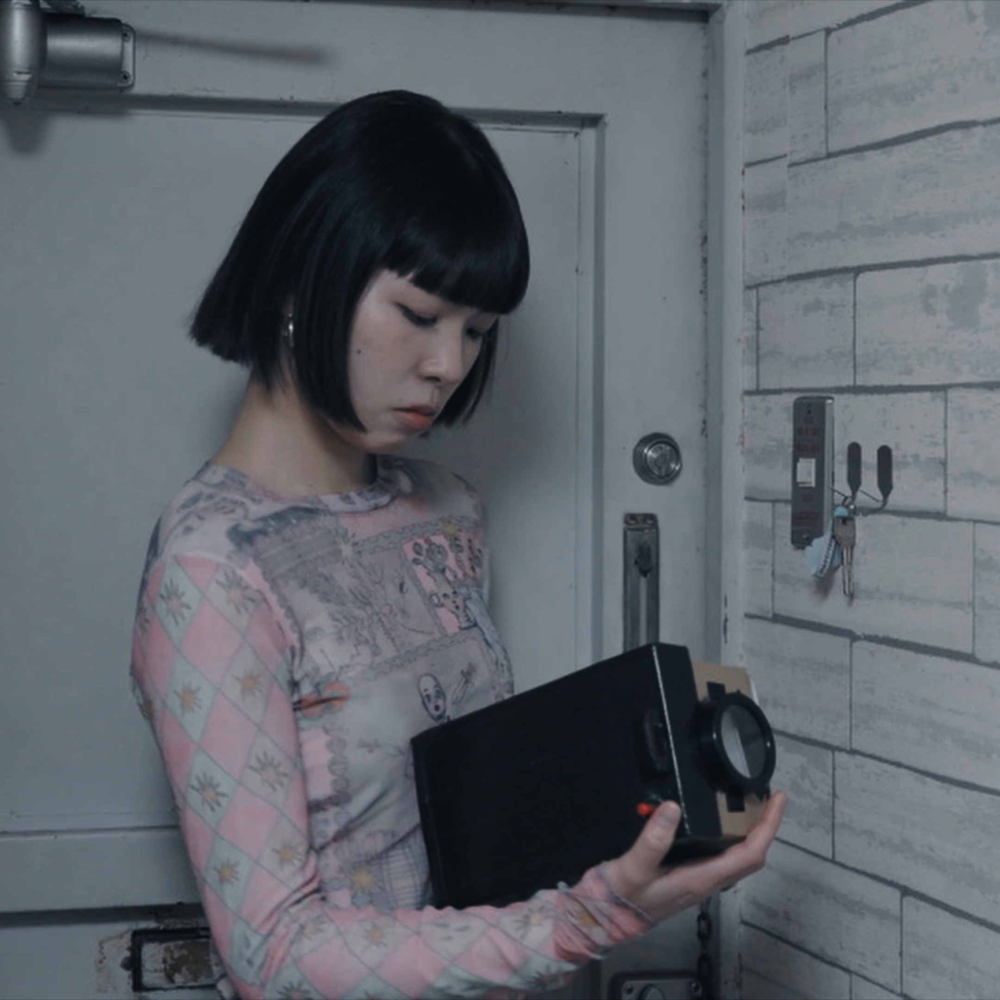

STORY
主人公の少女は、ある日、不思議なカメラを手に入れる。このカメラには特別な力があり、彼女と本当に心を通わせた相手だけが、はっきりとしたモノクロ写真として写る。それ以外の人を撮ると、写真はぼやけてしまうのだった。
やがて彼女は新しい環境で数人の友人と出会い、一緒に写真を撮るようになる。写った写真はすべて鮮明なモノクロ写真で、彼女は心から安心し、友情を信じ始める。
しかし、1人の友人を撮った写真が、なぜかボケて写っていた。少女は違和感を覚え、やがてその人物が実は自分を裏切っていたことに気づく。
この出来事をきっかけに、彼女は人との関わりを避けるようになり、他人を信じることができなくなっていく。
そんなある日、彼女はふと、自分自身をカメラで撮ってみる。すると、現れた写真は――初めての「カラー写真」だった。
その瞬間、彼女はあたたかさと安心感に包まれる。そしてようやく気づくのだった。この世界で最も信頼できる大切な友達は、自分自身であるということに。
